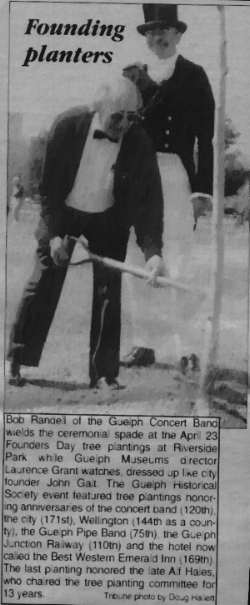

To commemorate our 120th anniversary we held a special 120th anniversary gala concert at E. L. Fox Auditorium with special guest personality David Broadfoot.
COMMEMERATIVE TREE PLANTED AT RIVERSIDE PARK|  |
The Guelph Historical Society also planted a tree in our honour at Riverside Park. To represent the Guelph Concert Band, trombonist Bob Randell donned Tophat and Tails along with a shovel to help in the proceedings. Former band secretary and Guelph Historical Society President, Ross Irwin also lent a helping hand. (picture: april 1998)
The Caption of the newspaper photograph reads: Bob Randell of the Guelph Concert Band wields the ceremonial spade at the April 23 Founders Day tree plantings at Riverside Park while Guelph Museums director Laurence Grant watches dressed up like city founder John Galt. The Guelph Historical Society Event featured tree plantings honourings anniversaries of the concert band (120th), the city (171st), Wellington (144th as a county), the Guelph Pipe Band (75th), the Guelph Junction Railway (110th) and the hotel now called the Best Western Emerald Inn (169th). The last planting honoured the late Alf Hales who chaired the tree planting committee for 13 years. (Tribune photo by Doug Halent). The Guelph Concert Band has been going strong for over 120 years and will continue to bring sweet sounds of music, entertainment and social life to the citizens of guelph! |